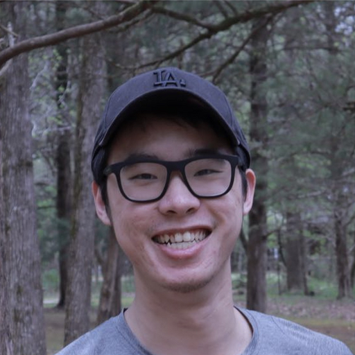

Ph.D. Candidate in Electrical & Computer Engineering
UC San Diego

Ph.D. candidate in Electrical & Computer Engineering with expertise in optical design, computational imaging, image processing, and hardware–software integration. Experienced in sensor characterization and optimization algorithms.
Ph.D., Electrical and Computer Engineering
La Jolla, CA
Master of Science, Biomedical Engineering (GPA: 3.8)
Durham, NC
Bachelor of Engineering, Electro-Optical Engineering (GPA: 3.95/5, Top 5/205)
Changchun, China
Dai, X., et al. (2025). “Single-shot HDR using conventional image sensor shutter functions and optical randomization.” ACM Transactions on Graphics (TOG).
Dai, X.*, et al. (2025). “RnGCam: High-speed video from rolling & global shutter measurements.” ICCV.
Dai, X., et al. (2022). “Quantitative Jones matrix imaging using vectorial Fourier ptychography.” Biomedical Optics Express, 13(3), 1457–1470.
Dai, X., et al. “Method and system of polarization microscopy imaging.” U.S. Patent Application No. 18/073,759.
Zeiss Research Microscopy Solutions · Manager: Matthew Andrew